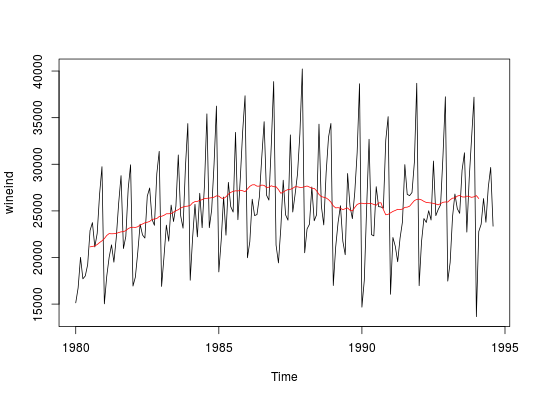

ma computes a simple moving average smoother of a given time series.
ma(x, order, centre = TRUE)
| x | Univariate time series |
|---|---|
| order | Order of moving average smoother |
| centre | If TRUE, then the moving average is centred for even orders. |
Numerical time series object containing the simple moving average smoothed values.
The moving average smoother averages the nearest order periods of
each observation. As neighbouring observations of a time series are likely
to be similar in value, averaging eliminates some of the randomness in the
data, leaving a smooth trend-cycle component. $$\hat{T}_{t} =
\frac{1}{m} \sum_{j=-k}^k
y_{t+j}$$ where
\(k=\frac{m-1}{2}\)
When an even order is specified, the observations averaged will
include one more observation from the future than the past (k is rounded
up). If centre is TRUE, the value from two moving averages (where k is
rounded up and down respectively) are averaged, centering the moving
average.
plot(wineind)sm <- ma(wineind,order=12) lines(sm,col="red")